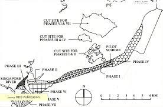
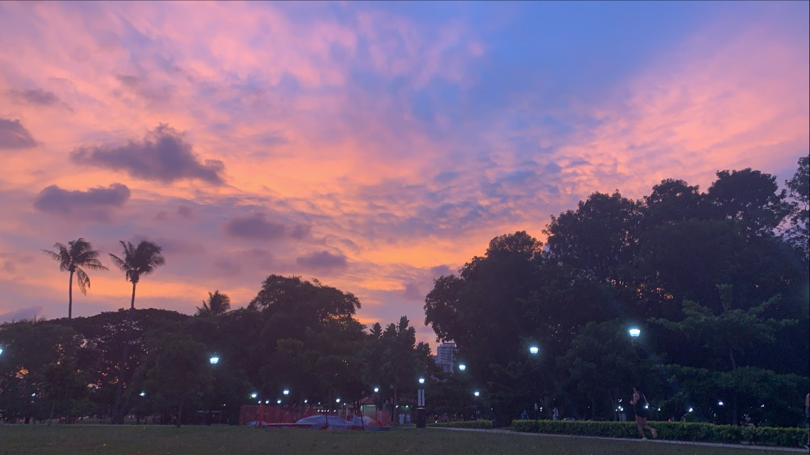

Some pictures of my favourite facilities at East Coast Park!
East Coast Park is a beach and a park encompassing Marine Parade, Bedok and Tampines, along the southeastern coast of Singapore. It was opened in the 1970s, after the Singapore government had completed reclaiming land off the coast at Katong which extends from Changi to Kallang. It serves these and other seaside communities.

East Coast Park was first proposed as part of plans for the utilisation of land reclaimed as part of the East Coast Reclamation Project. Initial plans for the park included a 9-acre (3.6 ha) swimming lagoon, areas for camping and picnicking, and outdoor sports facilities such as tennis courts. Development work commenced in the middle of 1971, and the park, although still under development, was opened to the public in October 1972, to alleviate some of the pressure on the Changi and Tanah Merah beaches on weekends and public holidays. The S$4 million swimming lagoon was opened in May 1976, along with refreshment and sanitation facilities.
East Coast Park has many bicycle rental shops making it extremely easy and convenient for one to cycle. The flat terrain and nice breeze make East Coast Park a popular cycling spot. One could cycle around the park or head to the Cyclist Park which has two circuits to be explored or even cycle down to Marina Barrage to catch the sunset!

Never got to experience cable skiing before and want to try out a new activity? Head down to East Coast Park's Wake Park to experience this once in a lifetime thrilling activity that is sure to get your heart pumping! Try out the different obstacles available! Do not be afraid if you are new as there are three routes, one specifically targetted for beginners!

Wanted to see the beautiful sunset? East coast park offers many places for you to sit, relax and just admire the sun set or rise with your family and friends! Don't miss out this beautiful sight!
By Bus
take bus 401 and alight at Bus Stop 92251
By MRT
take to bedok MRT, afterwhich take Bus 31 or 196 and alight at parkway parade and walk via Marine Parade Central
By Car
East Coast Park Carpark C1